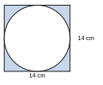

උපදෙස්: සියලුම ප්රශ්නවලට පිළිතුරු සපයන්න. සියලු ගණනය කිරීම් පැහැදිලිව දක්වන්න. අවශ්ය තැන්වල π සඳහා 22/7 ලෙස ගන්න.
ABCD සමාන්තරාස්රයේ AB = 14 cm, BC = 8 cm වන අතර AB හා DC අතර ලම්බ දුර 6 cm වේ.
(i) ABCD සමාන්තරාස්රයේ වර්ගඵලය සොයන්න.
(ii) ABCD සමාන්තරාස්රයේ පරිමිතිය සොයන්න.
(iii) BC හා AD පාද අතර ලම්බ දුර සොයන්න.
PQRS සමාන්තරාස්රයේ වර්ගඵලය 96 cm2 වන අතර PQ = 12 cm වේ.
(i) h හි අගය සොයන්න.
(ii) PQRS හි පරිමිතිය 40 cm නම්, QR පාදයේ දිග සොයන්න.
(iii) QR හා PS පාද අතර ලම්බ දුර සොයන්න.
ත්රපීසියමක සමාන්තර පාදවල දිග 9 cm හා 15 cm වේ. ඒවා අතර ලම්බ දුර 8 cm වේ.
(i) ත්රපීසියමේ වර්ගඵලය සොයන්න.
(ii) මෙම ත්රපීසියමේ වර්ගඵලයට සමාන වර්ගඵලයක් ඇති සෘජුකෝණාස්රයක පළල 8 cm නම්, එහි දිග සොයන්න.
(iii) උස නොවෙනස්ව, 15 cm පාදය 3 cm කින් වැඩි කළහොත්, වර්ගඵලය කොපමණ ප්රමාණයකින් වැඩි වේද?
රූපයේ දැක්වෙන ත්රපීසියමේ වර්ගඵලය 70 cm2 වේ. සමාන්තර පාද 6 cm හා 8 cm වේ.
(i) h හි අගය සොයන්න.
(ii) එම h උසම ඇති තවත් ත්රපීසියමක එක් සමාන්තර පාදයක් 5 cm වන අතර එහි වර්ගඵලය 80 cm2 වේ. අනෙක් සමාන්තර පාදයේ දිග සොයන්න.
(iii) වර්ගඵලය 70 cm2 හා උස 10 cm වන ත්රපීසියමක සමාන්තර පාදවලට ගත හැකි පූර්ණ සංඛ්යාමය දිග යුගල දෙකක් ලියන්න.
π සඳහා 22/7 ලෙස ගන්න.
(i) රූපයේ දැක්වෙන, අරය 7 cm වූ වෘත්තාකාර තහඩුවේ වර්ගඵලය සොයන්න.
(ii) විෂ්කම්භය 28 cm වූ වෘත්තාකාර තහඩුවක වර්ගඵලය සොයන්න.
(iii) වෘත්තාකාර තහඩුවක වර්ගඵලය 1386 cm2 වේ. එහි අරය සොයන්න.
පැත්තක දිග 14 cm වූ සමචතුරස්රාකාර තහඩුවකින් කපා ගත හැකි විශාලතම වෘත්තාකාර තහඩුව කපා ඉවත් කරනු ලැබේ. π සඳහා 22/7 ලෙස ගන්න.
(i) සමචතුරස්රාකාර තහඩුවේ වර්ගඵලය සොයන්න.
(ii) වෘත්තාකාර තහඩුවේ අරය ලියන්න.
(iii) වෘත්තාකාර තහඩුවේ වර්ගඵලය සොයන්න.
(iv) ඉතිරි වන (අඳුරු කළ) කොටසේ වර්ගඵලය සොයන්න.

රූපයේ දැක්වෙන්නේ බිත්තියක පැති පෙනුමයි. පහළ කොටස දිග 8 m හා උස 3 m වූ සෘජුකෝණාස්රයකි. ඉහළ කොටස සමාන්තර පාද 8 m හා 4 m ද, උස 2 m ද වූ ත්රපීසියමකි. බිත්තියේ අරය 0.7 m වූ වෘත්තාකාර ජනේලයක් ඇත. π සඳහා 22/7 ලෙස ගන්න.
(i) සෘජුකෝණාස්රාකාර කොටසේ වර්ගඵලය සොයන්න.
(ii) ත්රපීසියම් කොටසේ වර්ගඵලය සොයන්න.
(iii) ජනේලයේ වර්ගඵලය සොයන්න.
(iv) තීන්ත ආලේප කළ යුතු බිත්තියේ වර්ගඵලය (ජනේලය හැර) සොයන්න.
(v) වර්ග මීටරයකට තීන්ත ආලේප කිරීමේ වියදම රු. 200 නම්, මුළු වියදම සොයන්න.